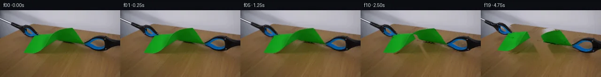
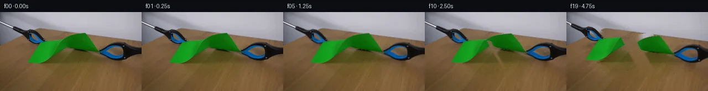
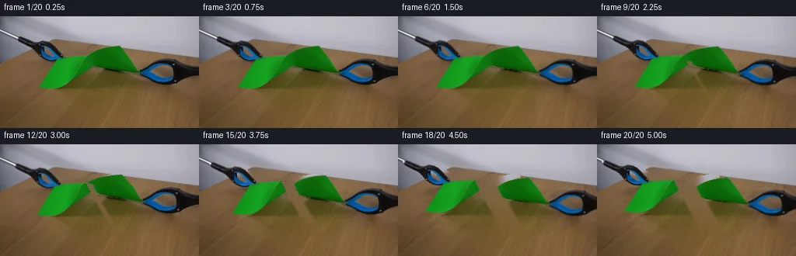
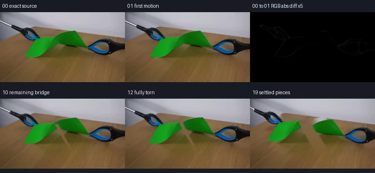

V0 · 初版
2026-11-05T00:08:56.092869+00:00 · RGB b0c5ec8d8a00
![]()
Observable Generation Trace
把最终像素视频、Harness 冻结的每轮候选、真实工具事件和 Agent 自述放在同一页。可观测证据与模型自述分开标记，避免把“模型说它检查过”误当成真实工具调用。
![首帧]()
Static locked-off single-shot with fixed frame throughout filmed with constant framerate in real-time. The scene shows a realistic scientific demonstration. The scene only contains the described setup and actions. Two blue-black grabber tools pull the piece of green paper from opposite corners, causing it to tear.
首帧显示在左侧播放器初始画面。Track 权限、隔离和 tensor 一致性来自 run manifest，而不是 METHOD.md。
默认勾选初版和最终版；可选其他版本一起同步播放。仅检查图更新的连续重复快照已合并，回退旧视频仍保留为一次修订。
Observable events
来源：events.jsonl + run manifest
此 Track 禁止读取输出图片。逐轮预览由外部 Harness 自动冻结，只用于事后审计，生成 Agent 当时看不到这些页面。
Frozen candidates
每张图来自该 round 的真实 00 / 01 / 05 / 10 / 19 帧

pixels f31771f6676ad89b · code 8aeb22082ec59237
--- previous/generate.py
+++ current/generate.py
@@ -0,0 +1,357 @@
+"""Deterministic continuation of first_frame.png using only local pixel operations."""
+from pathlib import Path
+import base64
+import json
+import math
+import re
+import numpy as np
+from PIL import Image, ImageDraw
+import cv2
+from scipy import ndimage as ndi
+from artifact_io import save
+
+ROOT = Path(__file__).resolve().parent
+TMP = ROOT / '.tmp'
+TMP.mkdir(exist_ok=True)
+W, H, N = 256, 144, 20
+SOURCE = np.asarray(Image.open(ROOT / 'first_frame.png').convert('RGB'), dtype=np.uint8)
+SRC = SOURCE.astype(np.float32)
+YY, XX = np.mgrid[0:H, 0:W].astype(np.float32)
+
+
+def smoothstep(a):
+ a = np.clip(a, 0., 1.)
+ return a * a * (3. - 2. * a)
+
+
+def largest(mask):
+ lab, n = ndi.label(mask)
+ sizes = np.bincount(lab.ravel())
+ sizes[0] = 0
+ return lab == np.argmax(sizes)
+
+
+def poly_mask(points):
+ a = np.zeros((H, W), np.uint8)
+ cv2.fillPoly(a, [np.asarray(points, np.int32)], 1)
+ return a.astype(bool)
+
+
+def extract_masks():
+ r, g, b = SRC.transpose(2, 0, 1)
+ green = largest((g > r + 18) & (g > b + 22) & (g > 64))
+ # Fill tiny sampling holes in the folded sheet, without crossing the tools.
+ green = ndi.binary_fill_holes(green)
+ blue = (b > r + 25) & (b > g + 13) & (b > 55)
+ dark = ((np.max(SRC, axis=2) < 106) & (np.abs(r-g) < 21) & (np.abs(g-b) < 25)) | (np.max(SRC, axis=2) < 44)
+ left_roi = poly_mask([(20,23),(31,23),(49,31),(56,29),(68,34),(78,45),(84,52),(75,58),(63,60),(48,53),(40,43),(24,35)])
+ right_roi = poly_mask([(175,69),(194,58),(207,52),(225,53),(243,61),(255,62),(255,79),(239,83),(226,90),(206,92),(185,85),(175,75)])
+ left = largest((blue | dark) & left_roi)
+ right = largest((blue | dark) & right_roi)
+ # Add RGB-consistent antialiased rims adjacent to the hard object cores.
+ union = green | left | right
+ hole = ndi.binary_dilation(union, iterations=3).astype(np.uint8)*255
+ estimated_bg = cv2.inpaint(SOURCE, hole, 6., cv2.INPAINT_TELEA).astype(np.float32)
+ masks = []
+ for core, kind in [(green,'paper'),(left,'tool'),(right,'tool')]:
+ fringe = ndi.binary_dilation(core, iterations=1)
+ inds = ndi.distance_transform_edt(~core, return_distances=False, return_indices=True)
+ nearest = SRC[inds[0], inds[1]]
+ if kind == 'paper':
+ den = np.maximum(estimated_bg[...,0] - nearest[...,0], 15.)
+ af = np.clip((estimated_bg[...,0] - SRC[...,0]) / den, 0., 1.)
+ af *= (g > r + 1) & (g > b + 6)
+ else:
+ v = estimated_bg-nearest
+ af = np.clip(np.sum((estimated_bg-SRC)*v,axis=2) / np.maximum(np.sum(v*v,axis=2), 100.), 0., 1.)
+ af *= ((b > r+15)&(b > g+5)) | ((r-b < 25)&(np.abs(r-g)<25))
+ alpha = np.where(core, 1., np.where(fringe, af, 0.)).astype(np.float32)
+ masks.append(alpha)
+ # At the grips the rigid tool is the foreground layer.
+ masks[0] *= 1.-np.maximum(masks[1], masks[2])
+ return masks, estimated_bg
+
+PAPER, LEFT, RIGHT, BG_INITIAL = None, None, None, None
+(PAPER, LEFT, RIGHT), BG_INITIAL = extract_masks()
+
+
+def reconstruct_wood_and_shadow():
+ # Smooth illumination fitted to known tabletop pixels only. Occluded pixel
+ # texture is local procedural residual noise, not a fetched texture.
+ table = poly_mask([(0,62),(67,29),(102,33),(256,55),(256,144),(0,144)])
+ shadow_roi = poly_mask([(49,61),(97,57),(140,59),(182,64),(218,83),(216,102),(175,114),(79,114),(47,98)])
+ obj = (PAPER+LEFT+RIGHT)>0.02
+ valid = table & ~ndi.binary_dilation(obj, iterations=4) & ~shadow_roi
+ valid &= (XX>3)&(YY>32)&(SRC[...,0]>75)&(SRC[...,0]>SRC[...,1]+12)&(SRC[...,1]>SRC[...,2]+15)
+ xn=(XX-128)/128.; yn=(YY-90)/70.
+ terms=[(i,j) for total in range(5) for i in range(total+1) for j in [total-i]]
… diff truncated; 270 more lines …
pixels f2e19d4426f8ecd7 · code 4a906b006f1a12b1
--- previous/generate.py
+++ current/generate.py
@@ -48,6 +48,11 @@
right_roi = poly_mask([(175,69),(194,58),(207,52),(225,53),(243,61),(255,62),(255,79),(239,83),(226,90),(206,92),(185,85),(175,75)])
left = largest((blue | dark) & left_roi)
right = largest((blue | dark) & right_roi)
+ # A few bright shaft highlights belong to the object even though the
+ # dark/blue seed test does not select their RGB values.
+ highlight = (np.min(SRC, axis=2) > 180)
+ left |= highlight & left_roi & ndi.binary_dilation(left, iterations=2)
+ right |= highlight & right_roi & ndi.binary_dilation(right, iterations=2)
# Add RGB-consistent antialiased rims adjacent to the hard object cores.
union = green | left | right
hole = ndi.binary_dilation(union, iterations=3).astype(np.uint8)*255
@@ -69,7 +74,12 @@
masks.append(alpha)
# At the grips the rigid tool is the foreground layer.
masks[0] *= 1.-np.maximum(masks[1], masks[2])
- return masks, estimated_bg
+ # Dilation is used only to estimate hidden colors. Visible surrounding
+ # pixels must remain the source pixels; otherwise a fixed repair fringe
+ # would stay behind when a layer moved away.
+ covered = np.maximum.reduce(masks) > 1e-5
+ backdrop = np.where(covered[...,None], estimated_bg, SRC)
+ return masks, backdrop.astype(np.float32)
PAPER, LEFT, RIGHT, BG_INITIAL = None, None, None, None
(PAPER, LEFT, RIGHT), BG_INITIAL = extract_masks()Final visual checks
Harness 保存的最终产物


Agent claims
以下文字由生成 Agent 撰写，不等同于工具证据
The supplied image was inspected with local Python and numeric RGB/color-mask measurements only. No image Read/View tools were used. Coordinates below use x to the right and y downward, with (0,0) at the top left.
Each frame occupies 0.25 seconds of the five-second sequence. Frame 00 is copied byte-for-byte in RGB from the supplied image.
| Frame | Time (s) | Event |
|---|---|---|
| 00 | 0.00 | Exact supplied starting pose. |
| 01 | 0.25 | Clamps begin a small outward pull; paper stays connected. |
| 02 | 0.50 | Pull grows gradually; the fold begins straightening. |
| 03 | 0.75 | Sheet becomes taut between the gripping corners. |
| 04 | 1.00 | Slight localized crease/shading near the weak central fold. |
| 05 | 1.25 | First small notch opens at the lower inward edge. |
| 06 | 1.50 | Tear advances upward by a few pixels; the intact bridge carries tension. |
| 07 | 1.75 | A small wedge of tabletop appears between jagged cut edges. |
| 08 | 2.00 | Crack reaches the middle of the narrow fold. |
| 09 | 2.25 | Crack continues upward with localized paper bending. |
| 10 | 2.50 | Only the upper part of the bridge remains intact. |
| 11 | 2.75 | Tear approaches the upper paper contour. |
| 12 | 3.00 | Last fibers break; both pieces remain in their clamps. |
| 13 | 3.25 | The pieces recoil slightly and move farther apart. |
| 14 | 3.50 | Separation widens; the free cut edges bend slightly. |
| 15 | 3.75 | Both tools continue outward with the torn pieces. |
| 16 | 4.00 | Motion decelerates; free corners flutter mildly. |
| 17 | 4.25 | Pieces settle with a clear gap through the entire tear. |
| 18 | 4.50 | A small damped settling motion remains. |
| 19 | 4.75 | Tools hold two separated pieces, showing the completed tear. |
Use local, deterministic NumPy/SciPy/OpenCV/Pillow pixel operations. Extract the paper and both grabbers from the first image with RGB-derived masks and measured geometry; reconstruct only hidden backdrop/table pixels; deform the source paper texture with an analytic continuous displacement field and a growing jagged crack. Rigidly transform the original clamp pixels with each gripping point. Add subtle edge thickness and moving soft shadows on the original tabletop. Preserve the first frame exactly and validate every saved PNG against a packed uint32 0xRRGGBB tensor. Numeric inspection will guide revisions; no visual review will be claimed.
The first pass revealed that dilated inpainting changed some visible pixels outside the foreground extraction. Restricting the reconstructed backdrop to actual foreground coverage removed this fixed fringe. The final source-layer reconstruction mean absolute RGB error is 0.00143 before correction. All PNG/tensor and player/tensor comparisons pass, both grip points remain attached exactly, and the final green regions have 1,700 and 1,364 pixels. No image tool or visual review was used.
This sequence was generated entirely with local Python pixel operations on first_frame.png. The text prompt supplied the requested action. No network, external reference images, external AI models, external rendering engines, or subagents were used. The image was inspected through numeric RGB samples, connected-component statistics, and coordinate measurements. Neither the source nor the generated images were opened with an image Read/View tool. The contact sheets were generated as deliverables; no visual review is claimed.
generate.py uses NumPy, SciPy, OpenCV, and Pillow for source-pixel extraction, interpolation, local background reconstruction, and output. OpenCV is used for local inpainting and pixel remapping, not for an external scene engine.
(79,53) and (179,73) have exactly the same translations as their respective grabbers. The final outward translations are approximately 15 pixels toward the upper left and 15 pixels toward the lower right.(113,50) to (120,64). A sinusoidally perturbed boundary produces complementary jagged tear edges. The opening advances from the lower fold toward the upper contour, while the region above the crack remains connected. At frame 12 the complete material split releases the two held pieces. Mild rotations around the gripping coordinates, changing green shading, and damped recoil represent the free edges settling.The dynamics are deterministic, scripted analytic deformation. This is a pixel-based approximation of tension, progressive fracture, recoil, and shadows; it is not a finite-element fracture simulation or newly filmed footage.
The output contains exactly 20 RGB frames at 256 x 144, played at 4 fps for five seconds. Frame samples are at 0.00, 0.25, ..., 4.75 seconds, each displayed for 0.25 seconds.
frames/00.png through frames/19.png: the complete RGB sequence.pixels.npz: a pixels array of shape (144,256,20) and dtype uint32, storing each color as 0xRRGGBB.index.html: a standalone canvas player with play/pause, replay, seeking, and looping. It embeds the first packed frame and lossless frame deltas; it does not require a server or network connection.inspection.png: an eight-frame contact sheet.transition_check.png: the exact source frame, the first moving frame, their amplified absolute RGB difference, and frames 10, 12, and 19 around and after the tear.OBSERVATION.md: numeric scene measurements and the event plan, written before generation coding.generate.py: the reproducible generation and validation program. Run python generate.py in this workspace to regenerate the image and player artifacts..tmp/validation.json: per-frame numeric diagnostics and verification results.All required checks passed:
first_frame.png.uint32, has the required spatial dimensions and twenty time slices, and has no bits above 0xFFFFFF.Validation was numeric only. Hidden tabletop pixels are reconstructed, and motion and lighting are analytic approximations. The original tool and paper appearance is retained through source-texture warping.